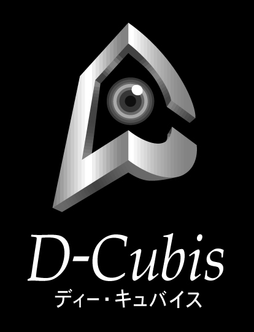

today
|

|
D-Cubis Official Site |
|
岡山県立大学 |
Last Update: 2004.1.31
このサイトのコンテンツを閲覧するにはMacroMedia
Shockwave Playerが必要です
■概論
■
■玉野海洋博物館（３Dバーチャル海洋博物館）(2003/12/19リリース)
横田研究室メンバー紹介 コンセプト … 各学年ごとに、まとめた空間を作りました。
ショーケースにはいつもの研究室の光景のコンテンツを配置しています。
データ … 空間情報[BUD] 配置情報[LAD] コンテンツ情報[COD]
土曜日の横田研究室 コンセプト … 私の所属する横田研究室を再現してみました
研究室の机の位置や窓から見える風景、その他家電製品の位置などを
できるだけ再現しようと努力してみました。
データ … 空間情報[BUD] 配置情報[LAD] コンテンツ情報[COD]
定番スニーカー コンセプト … イメージは靴屋です。
いかに美術館、博物館といったイメージから離れた物を
作るかということを意識してみました。
出来栄えは実際の靴屋とも離れてしまっていますが、
靴をディスプレイする店員になりきってみました。
靴に関係ないコンテンツについては特に意味はありませんが、
建物全体をよりポップに見せるために、
靴以外はすべて絵を用いたのは一応こだわりです。
日本(にっぽん) コンセプト … コンテンツが無いように見えますが、一応あります。
コンテンツの配置を利用して一工夫してみました。
石 コンセプト … D-Cubistの BOSS 石崎さんを中心とした開発者紹介です。
あと、いい感じに撮れた、ある研究室のメンバーにもスポットを当てています。
和 コンセプト …日本人らしく和風の建物をイメージ。
コンテンツは書道含め、個人的な大学生活の思い出が盛り沢山！！
データ … 空間情報[BUD] 配置情報[LAD] コンテンツ情報[COD]
Zodiac コンセプト … 歩き回れる、小さなプラネタリウムです。
黄道十二宮の星座達にまつわる神話に触れてみてください
本質 コンセプト … D-Cubistで空間を生成するには３つのデータ(空間、配置、コンテンツ)が必要です。
そこで、この空間に展示されているコンテンツにはリンクが"type2"〜"type4"まで存在していて、
リンクをクリックすると別のミュージアムが立ち上がりますが、type2は元のデータから
空間のデータだけ変更したもの、type3は元のデータから配置のデータだけを変更したもの、
type4はコンテンツのデータだけ変更したものとなっています。
ですから「建物は同じだけど展示しているコンテンツが違う」、
「展示しているコンテンツは同じだけど建物が違う」、「建物やコンテンツは同じだけど配置が違う」
というようなことがD-Cubistでは可能という意味を示したくてこのような空間を生成しました
みんな一緒に「和」の空間へ行こう(研究室のみ公開) コンセプト … 研究室内のみの一時的なテスト公開です。
もしかしたら、すでに来館者がいるかも…
できればユーザ名はわかる名前でお願いします。
接続数に制限がありますので、入れなければ後でやりなおしてみてください
YokotaLab Contents Collection(研究室のみ公開) コンセプト … 研究室内のみの一時的な？公開です。
研究室の全体会議で紹介して、プロジェクタの性能の関係で画像が
よく見えなかったミュージアムです。
コンテンツは主に新入生歓迎会のコンテンツを中心に展示してあります。
また、良いコンテンツを入手次第、随時更新したいと思います。
(最終更新日 11/28)
■出展、イベント、研究発表
■受賞歴
■D-Cubis更新履歴■リンク
このサイトはmacromedia社のDirectorを使用して作成しています